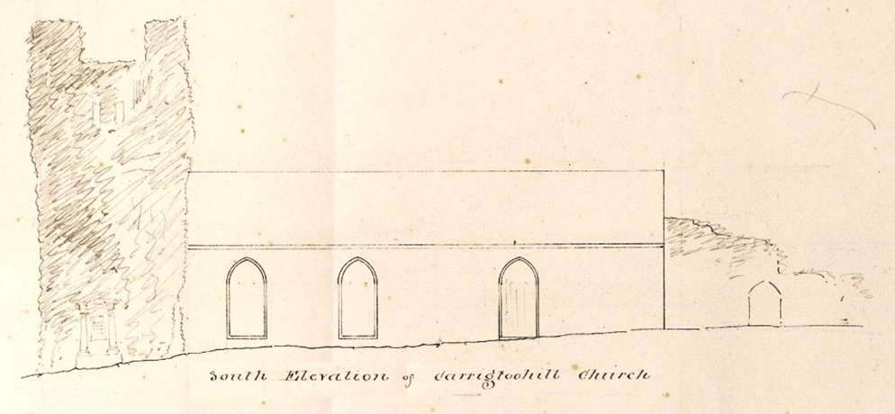
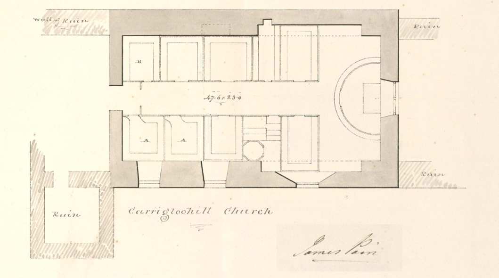
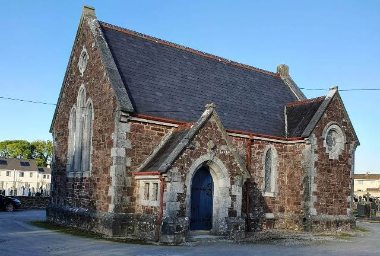
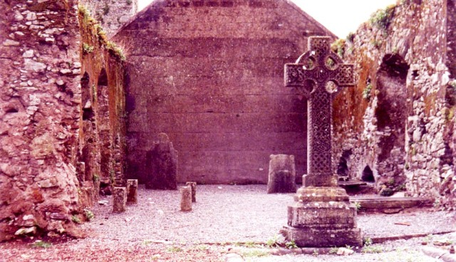
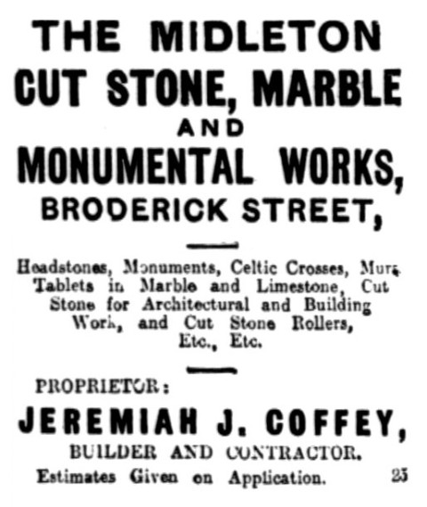

Parish Churches
St David's Church of Ireland
Former Church of Ireland Parish Church
Like St Mary’s Catholic Parish Church, St David’s Church of Ireland replaced an earlier church, but unlike St Mary’s,
it does not occupy the same location. The previous church, which had no known Patron Saint, abutted the former Augustinian
Canon Abbey and its Bell Tower, as may be clearly seen by the First Edition 6" OSI map of the 1820s/40s Locating the
the two parish churches. St David's is simply identified as a church within the Abbey ruins.
 First Edition 6" Ordinance Survey of Ireland (OSI)
First Edition 6" Ordinance Survey of Ireland (OSI)
It is a Church of the so-called ‘Established Church’, as stipulated by the 1801 Act of Union,and officially recognised as
a place of worship. Whereas, the Catholic parish churches could only be referred to as Chapel.
Brothers James and George Richard Pain were commissioned by the Board of First Fruits to design churches and glebe
houses in Ireland. In 1833, James Pain became one of the four principal architects of the Board of Ecclesiastical
Commissioners. A set of his drawings were obtained from the Church of Ireland RCB library,
dated 1835. His south elevation appears to indicate a family vault near, or abutting the tower. It also seems to
indicate a sloping ground running east to west just below the window opes. The rough sketch manner in which the
details of the tower and ruins are drawn would seemingly indicate that they were of no relevance to the architect.
Whereas the church outline is clearly defined. There were no other elevation drawing in this series.
|

James Pain's South Elevation
|

James Pain's Floor Plan
|
The plan seems to indicate that the church was built on the ruins of the Abbey. At the eastern end it would appear that
there was a window behind the altar which today is filled in.
Of the church, a few years later, Samuel Lewis’,
in his Topographical Survey of Ireland, published in 1837, he describes the church and Abbey:
".... The Church, a small but venerable structure, was repaired and much improved in 1835, by grant of £144.8. from the
Ecclesiastical Commissioners.... Nearby adjoining the village are the ruins of a Franciscan Abbey, founded and endowed
by the Barry Family: one of its towers still serves as a steeple for the present parish church...."
Then, ten years later, the Valuation Field Book,
26th November 1847, similarly confirms this. More importantly, it identifies the locations of both parishes
churches within section 55 of the village as; plot 9, St Mary’s, and plot 10 as St David’s.
New St David's Church of Irelsand Parish Church

St David's Church of Ireland
At a meeting held in Dublin of the Ecclesiastical Authorities, 10th April 1902, a resolution was adopted to construct a new
parish church in Carrigtwohill. These proceeding were reported in an article by the Irish Times the following day. The approval was as
a result of an urgent appeal made by the clergymen of the parish, for funds to enable them to build a new church in near proximity of
the one refurbished in 1834 which long ago had been built within the ruin of the former Augustinian Canon Abbey, and by now in a
dilapidated state of repair with the roof in an advanced state of decay.
The cost to further renovate the existing building was estimated to be approximately £1,200. Yet, a new church could be built for
a comparatively small additional sum. The latter option was adopted.
The proposal was put forward by the Lord Bishop of Cork, Cloyne & Ross, William Edward Meade (1832-1912), who had written to the
committee expressing his hearty approval of the scheme, requesting that:
“subscriptions are earnestly solicited and will be thankfully received by the Rev. J. Levingston, Carrigtwohill Rectory, Midleton;
Wm. Wakeham, Esq., Water Rock, Midleton; or G. Hayes, Esq. Parochial Treasurer, Greenville, Carrigtwohill, Co. Cork.”

View looking westward at eastern gable of church
It was further reported that the former church was surrounded on three sides by graves; many of them being in close proximity of
the walls, reaching up to the windows, was deemed most unsatisfactory. A recent photograph of the eastern gable wall of the church
seems to confirm there were no windows. Oddly though, there does appears to be a window in the middle of this wall now covered over
completely in mass concrete in James Pain’s plan. This would further suggest the graves up to window level were on the other three
sides. Does this mean those graves were on the western and northern sides are beneath the gravel carpark?
The foundation stone was laid by Lady Barrymore,18th September 1903. That same year Jeremiah J Coffey of Midleton was awarded
the contract valued at £1,220. The firm operated from his premises in Brodrick Street (Coolbawn), whose workforce consisted of 14 stonemasons,
20 carpenters, and over 40 other workers, according to the Midleton’s Parish website. Coffey business were specialists in the erection of
religious structures; one of which was Holy Rosary Catholic Church (1894-96); adding its spire in 1907-08.

Cork Weekly Examiner,
23rdDecember 1913
The project was spearheaded by Rev L Levington who commenced the fundraising campaign to secure sufficient funds. This included a bazaar
over the 29th and 30th June 1904. He was assisted and supported by Lady Barrymore and Lady Mary Aldworth amongst others.
Evening Irish Times, 26th January 1905, article report of the consecration of St David’s Church describes it as being of early Gothic
style, and faced using very ornamental red sandstone, with limestone dressings. The apse at the east wall was constructed a semi-octagonal form
of an ancient church design by architects William Henry Hill (1867 – 1941) and Son, of Cork City, which was said to be capable of accommodating
one hundred worshipers. It measures 54 feet in length, 25 feet in breadth, and 29 feet in height from floor to apex,
or 16.4mt x 7.6mt x 8.8mt respectively. In 1907, William Henry Hill was appointed diocesan architect.
St David’s Church was consecrated, 25th January 1905, in a service conducted by the Right Rev. William Meade, DD. He was assisted
by the Revs. Canon Daunt, Rector Queenstown; (who acted as Bishop’s Chaplain); Canon Galwey, LL.D,; Richard Proctor, G.V. Jourdane; Walter Rountree,
Diocesan Inspector, Cork, and J Levingston, B.A.